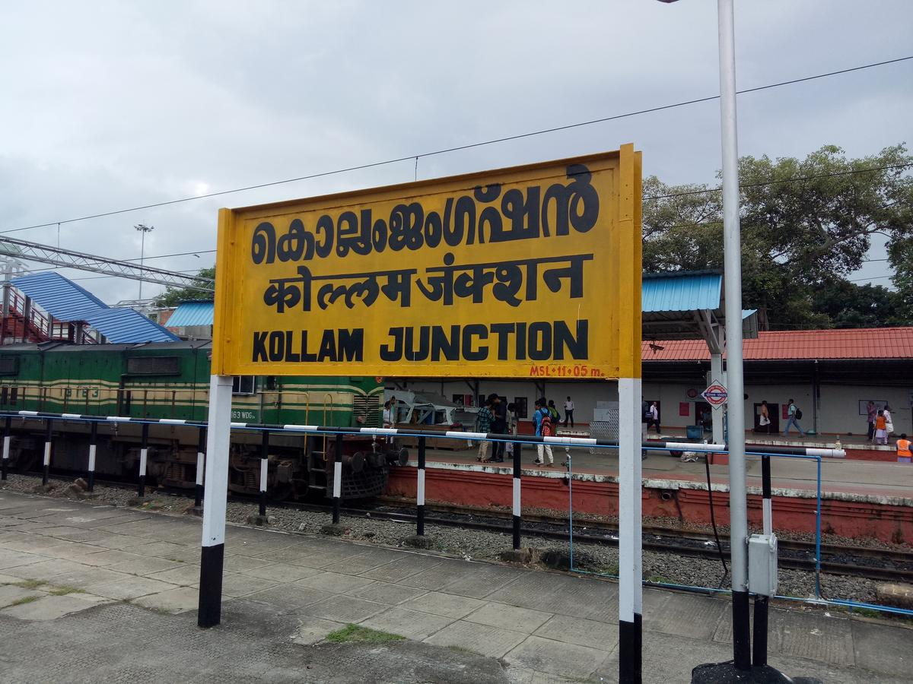
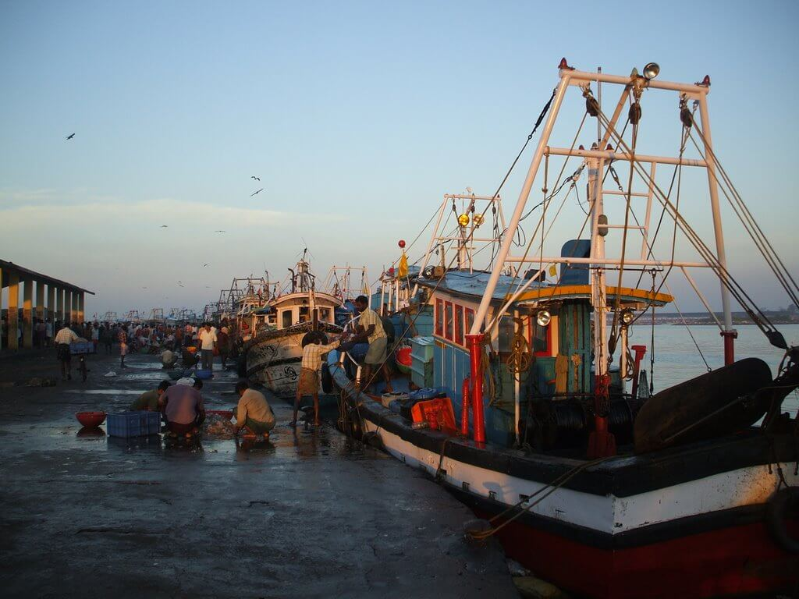

1 / 3

Kollam
2 / 3

3 / 3

Year of formation : 1949, July 1 Main River : Kallada Desinganad is the former name of Kollam. Thenmala Eco Tourism Project, the first of its Kind in India is in Kollam District, at Thenmala, started in 1988. World's longest bamboo trees was discovered at Pattazhi in Kollam. The biggest irrigation project in Kerala, Kallada Dam across river Kallada is in Kollam District. It is located in the Chentaruni Wildlife sanctuary. Kollam district is a centre of cashew industry and fishing (Neendakara). Neendakara fisheries project was established in Kollam with the help of Norway in 1953. Punalloor is the hottest place in Kerala www.keralapscgk.com | Telegram Channel | Youtube | Facebook The famous Aryankavu pass is in Kollam Ramanattam old form of Kathakali was originated in Kottarakkara by Kottarakkara Thampuran. Lakshamveedu project was firstly introduced in Chithara (Kollam) The concept of Lakshamveedu project by M.N. Govindan Nair, the housing minister of Kerala. Asramam maithanam, Peerangi maithanam, Adichanellur etc are in Kollam. The city of Kollam is on the bank of Ashtamudy Lake. The biggest fresh water lake in Kerala Sasthamkottah backwater is in Kollam District. Kerala Institute of Folklore and Rural Development is at Kottarakkara. Chattambi Swami attained samadhi in Panmana (Kollam District) Ceramic factory at Kundara, Rare Earths Ltd. at Chavara, Punalur Paper Mills and Neendakara fishing port are in Kollam District.